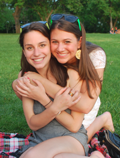
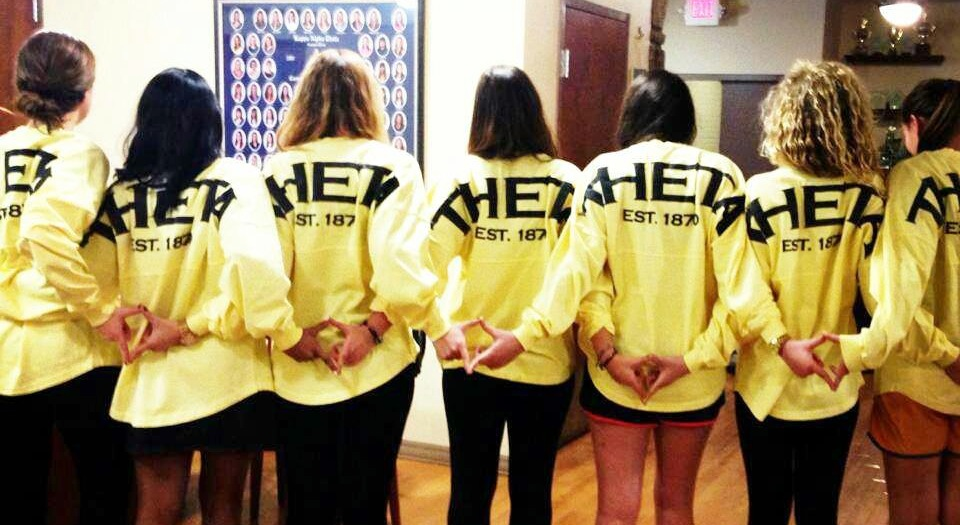
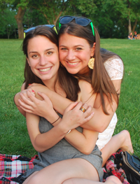
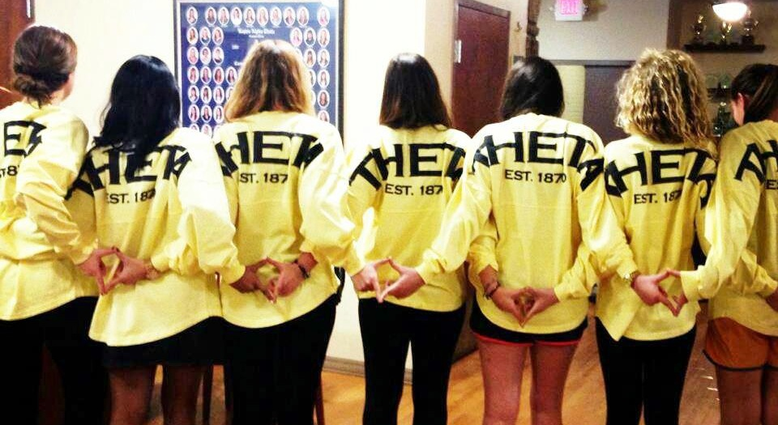

Sisterhood
The bonds of sisterhood are unlike other friendships that a woman makes throughout her college experience. Thetas are bonded by the ties of the fraternity, which means taking sincere parts in each other's lives and keeping sisters' best interests at heart. Theta provides both a home away from home during college and a lifetime of friendship and love. We value our sisterhood more than anything else, receiving the love and support of nearly 100 young women through the ups and downs of young adult life. Sisterhood is that kind of unconditional, constant support that everyone seeks but few truly experience.

Bigs and Littles
Each new Theta receives a big sister who acts as an older role model, confidante, and friend. Bigs and littles are some of the most special and unique relationships in Theta, and your Big is always unconditionally supportive and loving. These pairs are mutually selective and determined in October, after several weeks of getting to know Theta and potential Bigs. New members receive gifts with clues about who their Bigs are during Big/Little Week and discover their identities at Revelation, after which they go out to celebrate with their new families.
Cabin
Each fall, sisters participate in an overnight retreat called Cabin, in which we plan the events of recruitment while getting to know more about each other. Recent locations of Cabin have included the Pittsburgh Zoo, Phipps Conservatory, and Loews Movie Theatre. Following a day full of activities and planning, sisters return to the Theta house for an enormous sleepover filled with laughs, movies, games, and secrets. Cabin always brings sisters closer together!
Day to Day
Outside of the formally planned events, Thetas are always hanging out together and bonding. In fact, you're likely to see a group of Thetas gathered in front of the first floor TV on Tuesday nights watching Glee. Each week, sisters wear letters around campus on Theta Thursday and share our Theta pride, and once a month, one pledge class is responsible for providing the food for a Theta Thursday dinner.

The bonds of sisterhood are unlike other friendships that a woman makes throughout her college experience. Thetas are bonded by the ties of the fraternity, which means taking sincere parts in each other's lives and keeping sisters' best interests at heart. Theta provides both a home away from home during college and a lifetime of friendship and love. We value our sisterhood more than anything else, receiving the love and support of nearly 100 young women through the ups and downs of young adult life. Sisterhood is that kind of unconditional, constant support that everyone seeks but few truly experience.

Bigs and Littles
Each new Theta receives a big sister who acts as an older role model, confidante, and friend. Bigs and littles are some of the most special and unique relationships in Theta, and your Big is always unconditionally supportive and loving. These pairs are mutually selective and determined in October, after several weeks of getting to know Theta and potential Bigs. New members receive gifts with clues about who their Bigs are during Big/Little Week and discover their identities at Revelation, after which they go out to celebrate with their new families.
Cabin
Each fall, sisters participate in an overnight retreat called Cabin, in which we plan the events of recruitment while getting to know more about each other. Recent locations of Cabin have included the Pittsburgh Zoo, Phipps Conservatory, and Loews Movie Theatre. Following a day full of activities and planning, sisters return to the Theta house for an enormous sleepover filled with laughs, movies, games, and secrets. Cabin always brings sisters closer together!
Day to Day
Outside of the formally planned events, Thetas are always hanging out together and bonding. In fact, you're likely to see a group of Thetas gathered in front of the first floor TV on Tuesday nights watching Glee. Each week, sisters wear letters around campus on Theta Thursday and share our Theta pride, and once a month, one pledge class is responsible for providing the food for a Theta Thursday dinner.

© Kappa Alpha Theta • Gamma Theta Chapter • 2013